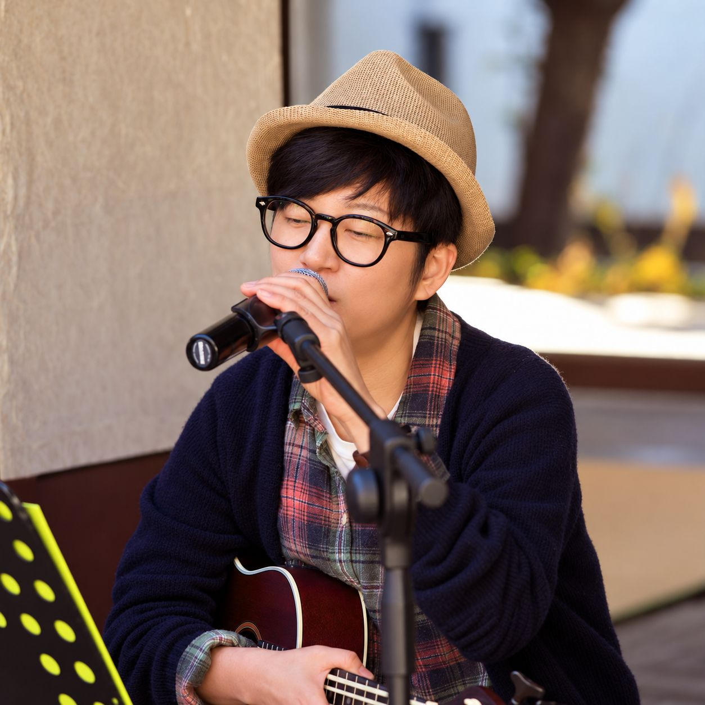

KnockOn Records2026.11.26

북촌홍반장
한곡안부 01. 짱구와 커피를
A Song of Hello 01. Coffee with Jjanggu
Written & Composed by 북촌홍반장, Mastered by 박지은(MyMars) @KnockOn Studio, Music Video Directed by 박지은(MyMars)
- Official MV | '짱구와 커피를'YouTube · KnockOn AI Studio
- YouTube Music | '짱구와 커피를'
- Spotify | '짱구와 커피를'
- 멜론 | '짱구와 커피를'
- Apple Music | '짱구와 커피를'
- 지니 | '짱구와 커피를'
- FLO | '짱구와 커피를'
- VIBE | '짱구와 커피를'
- 벅스 | '짱구와 커피를'
- Press | ZDNet Korea북촌홍반장, 디지털 싱글 '한곡안부 01. 짱구와 커피를' 공개 · 2026.11.25
- Official Teaser | '짱구와 커피를'YouTube Shorts

북촌홍반장 | Artistknockonrecords.com
A Project Born from KnockOn ReleaseLab Season 1
℗ · © 2026 노크온 레코드 KnockOn Records